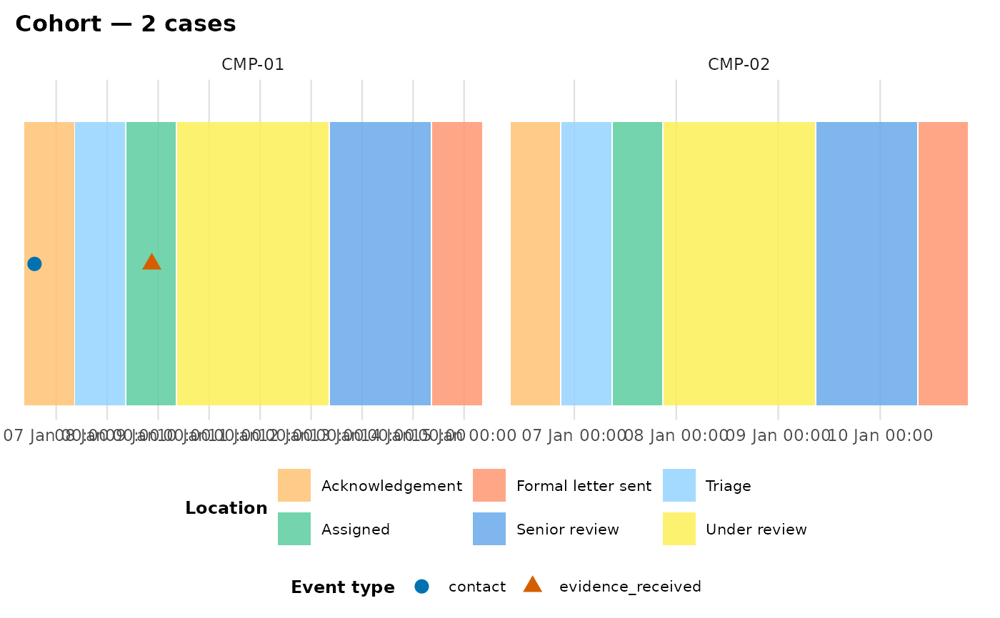

Visualise several cases as a faceted small-multiples grid
plot_journey_cohort.RdLays several cases out one facet panel per case, via [ggplot2::facet_wrap()], so a cohort can be compared at a glance. Every case is run through the same validate + derive pipeline [plot_patient_journey()] uses, so per-location colours stay consistent across panels.
Usage
plot_journey_cohort(
data,
case_ids = NULL,
location_categories = c("location_move", "ed_location_move"),
time_col = "timestamp",
act_type_col = "act_type",
activity_col = "activity",
case_col = "caseID",
patient_col = "K_Number",
tz = "UTC",
terminal_activities = NULL,
exclude_categories = NULL,
tail_strategy = "last_event",
align_start = FALSE,
ncol = NULL,
max_cases = 25L,
show_duration = FALSE,
label_boxes = FALSE,
event_type_top_n = NULL,
state_label = "Location",
location_palette = NULL,
event_palette = NULL,
palette_style = c("okabe", "brewer"),
box_height = 0.25,
box_gap_prop = 0.003,
title = NULL,
return_data = FALSE
)Arguments
- data
A data frame or tibble containing the event log for the whole cohort.
- case_ids
Character vector of cases to plot, or `NULL` (default) to plot every case in `data`, subject to `max_cases`.
- location_categories
Character vector of `act_type` values that mark a move to a new exclusive state.
- time_col, act_type_col, activity_col, case_col, patient_col
Column-name mappings, as in [plot_patient_journey()].
- tz
Timezone used when parsing character timestamps.
- terminal_activities
Character vector of terminal `activity` values. A case whose spell never reaches one renders with the `(ongoing)` open-spell marker in its own panel.
- exclude_categories
Character vector of `act_type` values to drop before plotting, or `NULL`.
- tail_strategy
Strategy for inferring each case's final box end time, as in
plot_patient_journey().- align_start
Logical. `FALSE` (default) compares cases on absolute time (free per-panel x range); `TRUE` rebases each case to its first move and compares them on one shared elapsed-hours axis.
- ncol
Number of facet columns, or `NULL` to let `facet_wrap()` choose.
- max_cases
Guard against faceting too many spells at once (a hang, not a plot); aborts with advice to pass explicit `case_ids` if exceeded.
- show_duration, label_boxes, event_type_top_n, state_label, location_palette, event_palette, palette_style, box_height, box_gap_prop, title
Passthrough render options mirroring [plot_patient_journey()].
- return_data
Logical; if `TRUE`, return `list(plot, boxes, events)` instead of just the plot.
Examples
plot_journey_cohort(complaint_example, case_col = "complaint_id",
location_categories = "stage_change",
patient_col = NULL, case_ids = c("CMP-01", "CMP-02"))
